How to run the garage's job book in Garage Desk: for the owner and the mechanics, with a look at what your customers see on their phone.
https://garage-desk-tau.vercel.appThis copy contains the sign-in details of the garage's staff accounts (chapter 2). Keep it inside the garage and do not share it.
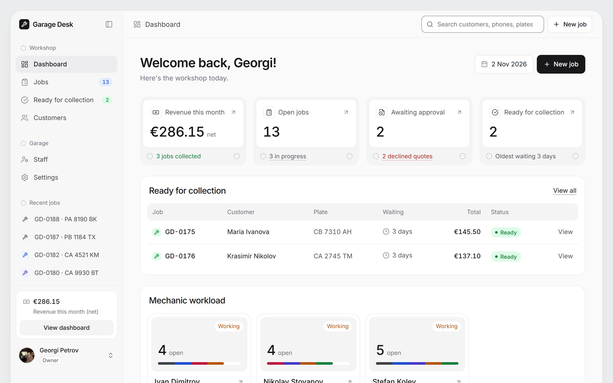
Button names and labels are printed in bold, exactly as they appear on screen. Steps are numbered: do one step at a time. Chapters marked "owner" describe pages only the owner can open.
Chapter 1
Garage Desk is the garage's job book. It replaces paper and WhatsApp notes. Every car that comes in gets a job. The job holds the work, the parts, the price, the customer's answer and every step until the car is collected.
| Who | What they do in Garage Desk |
|---|---|
| The owner | Sees every job and the dashboard with this month's revenue. Creates jobs for any mechanic, records approvals given by phone, cancels jobs, changes prices and VAT, and manages the staff accounts. |
| Mechanics | See and work on their own jobs. Add customers and cars, create jobs, add labour and parts, send the quote and the customer link, and move the job forward. |
| Customers | Do not need an account. They get a private link on their phone. On it they read the quote, approve or decline it, and later see when the car is ready. |
Most jobs follow the same path. Each step has its own chapter.
Two more statuses exist: Declined when the customer says no, and Cancelled when the owner stops a job for good. Chapter 18 lists every status.
Money is in euros. You always type prices without VAT. Garage Desk adds VAT once, on the job total. Times are Sofia time.
Chapter 2
| Name | Role | Email (sign in with this) | First password |
|---|---|---|---|
| {{OWNER_NAME}} | Owner | {{OWNER_EMAIL}} | {{OWNER_PASSWORD}} |
| {{MECHANIC_1_NAME}} | Mechanic | {{MECHANIC_1_EMAIL}} | {{MECHANIC_1_PASSWORD}} |
| {{MECHANIC_2_NAME}} | Mechanic | {{MECHANIC_2_EMAIL}} | {{MECHANIC_2_PASSWORD}} |
| {{MECHANIC_3_NAME}} | Mechanic | {{MECHANIC_3_EMAIL}} | {{MECHANIC_3_PASSWORD}} |
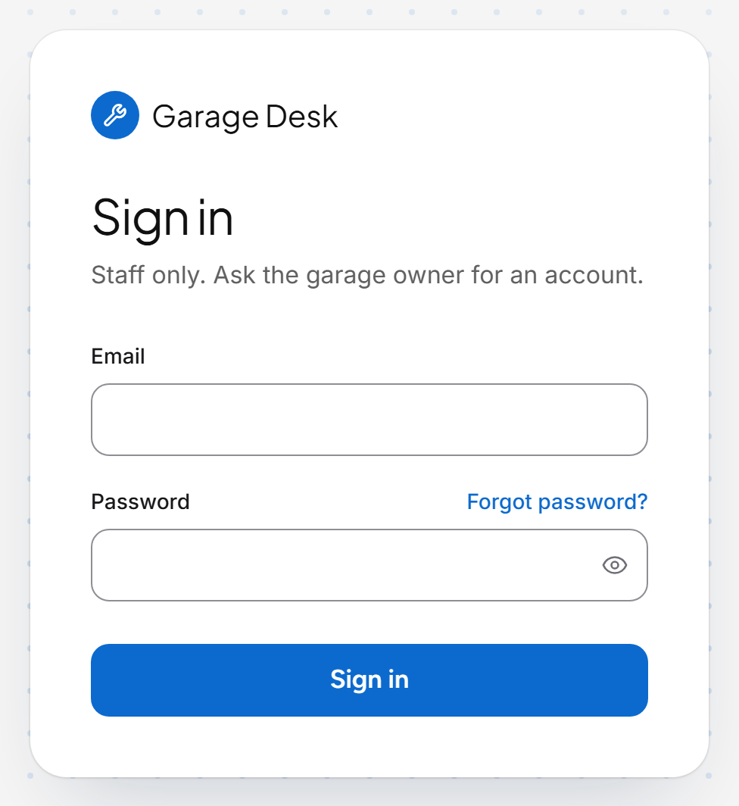
If you see "Email or password is incorrect.", check the spelling and capital letters, then try again. The same message appears for an account the owner has deactivated.
After 10 tries from the same network within 5 minutes, sign-in pauses and says "Too many sign-in attempts. Please wait a few minutes and try again." This protects the accounts from password guessing.
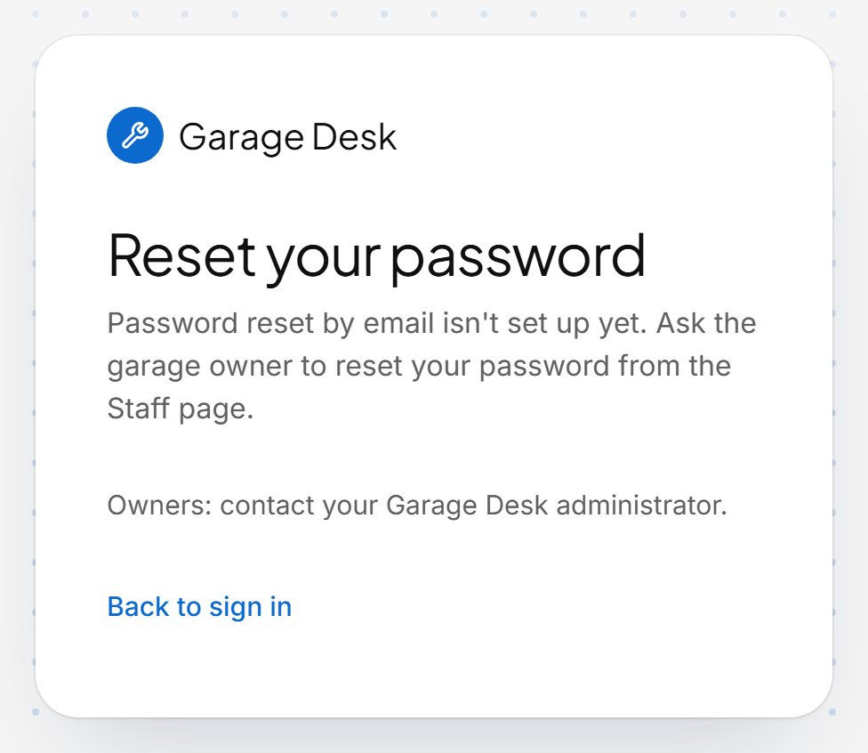
This signs you out on this device only. On a shared computer, always sign out when you finish.
Chapter 3
Every staff page has the same frame: a menu on the left and a bar along the top.
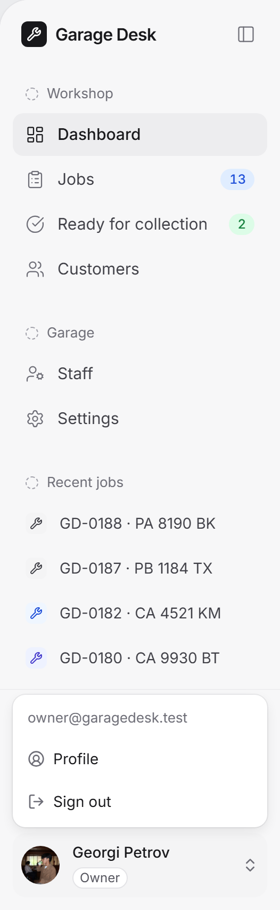
The left menu is hidden to save space. Press the menu button (three lines) at the top left to open it. Your photo or initials at the top right open your profile.
On a computer you can fold the left menu away with the panel icon next to Garage Desk, and bring it back with the same icon in the top bar.
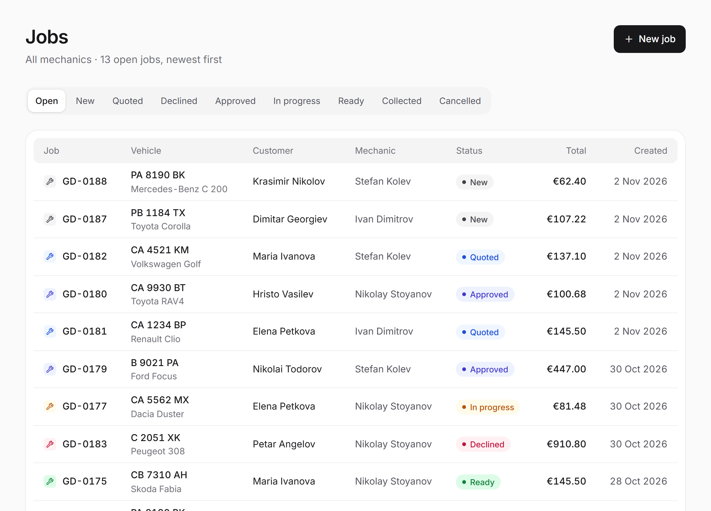
Chapter 4 · owner
The dashboard shows the state of the workshop at a glance. Every card, figure, row and chip is clickable: it opens the list of exactly the jobs it counts.
| Card | What it counts | The line underneath |
|---|---|---|
| Revenue this month | The total of jobs collected this month, net (without VAT). A job counts in the month it was collected. | How many jobs were collected. |
| Open jobs | Every job that is not Collected or Cancelled. | How many are in progress. |
| Awaiting approval | Quotes sent and waiting for the customer. | Declined quotes, in red: these need a new quote or a call. |
| Ready for collection | Cars that are finished and waiting. | How long the oldest one has waited. |
The table lists the cars waiting to be collected, longest waiting first: job number, customer, plate, waiting time, total and status. Press View to open a job, or View all for the full list.
One card per mechanic. It shows how many open jobs they have and a coloured bar of their statuses. The label says Working (something in progress) or Free. Press a card to see that mechanic's open jobs.
Start the day here. Red "declined quotes" and a long "oldest waiting" usually need a phone call.
Chapter 5
Before you create a job, the customer and their car must be in Garage Desk. Always search first, so you do not add the same customer twice.
You can type a phone number with or without spaces, and a plate with or without spaces: CA1234AB and CA 1234 AB find the same car. The search box in the top bar does the same from any page.
Type plates with Latin letters (switch the keyboard to English). A plate typed in Cyrillic looks the same but is saved as a different plate, so search will not find it.
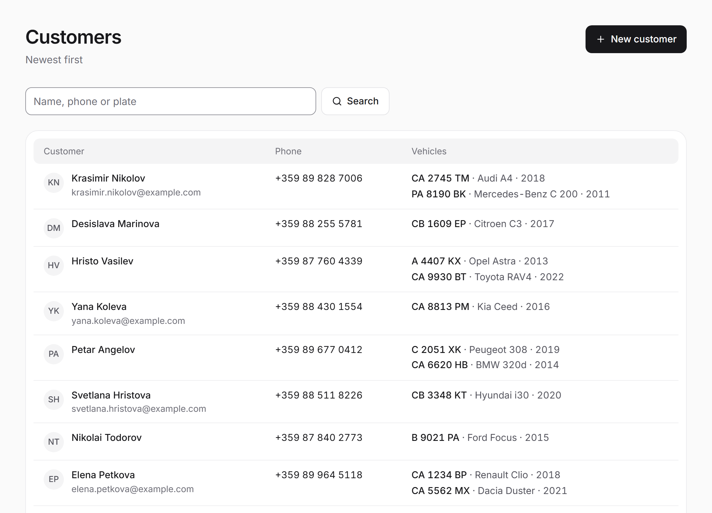
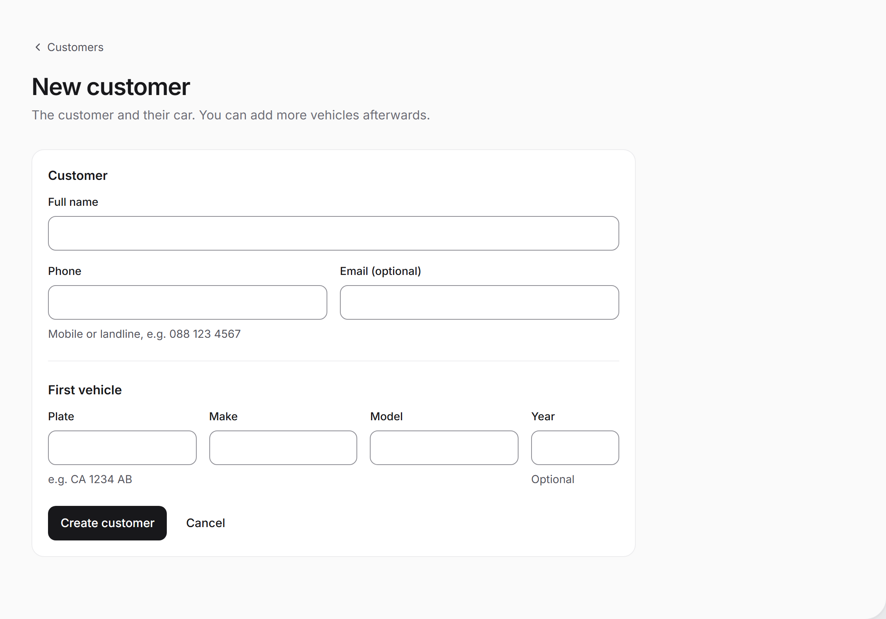
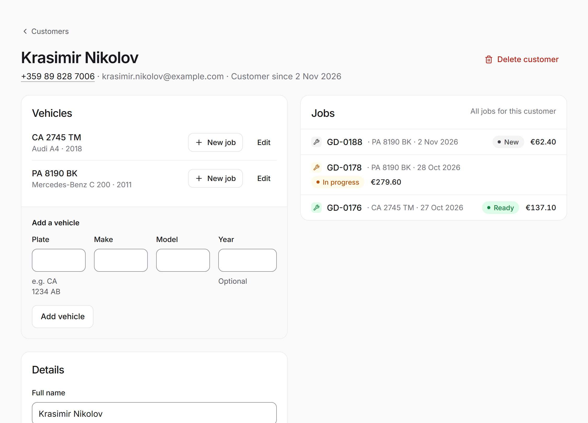
Each plate can exist only once. If you see "A vehicle with plate … already exists. Search for it instead.", the car is already in Garage Desk: search for it.
Delete customer (owner only) removes a customer added by mistake. It works only for a customer with no jobs, and it cannot be undone.
Chapter 6
A job is one visit of one car. It starts as New.
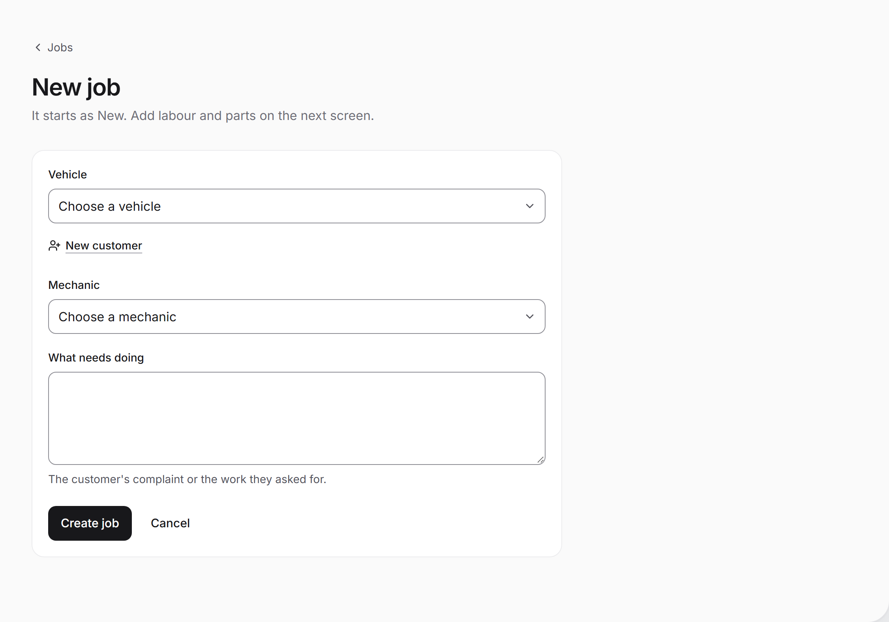
Write the complaint in the customer's own words ("squeaks when braking"). It stays on the job and helps the mechanic.
Chapter 7
The job page is where all the work happens. Lines of labour and parts build the quote.
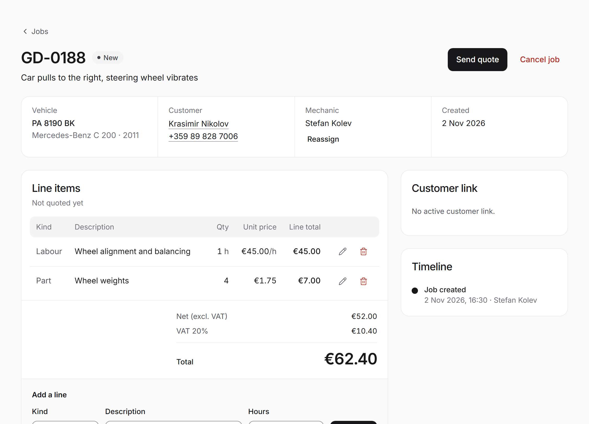
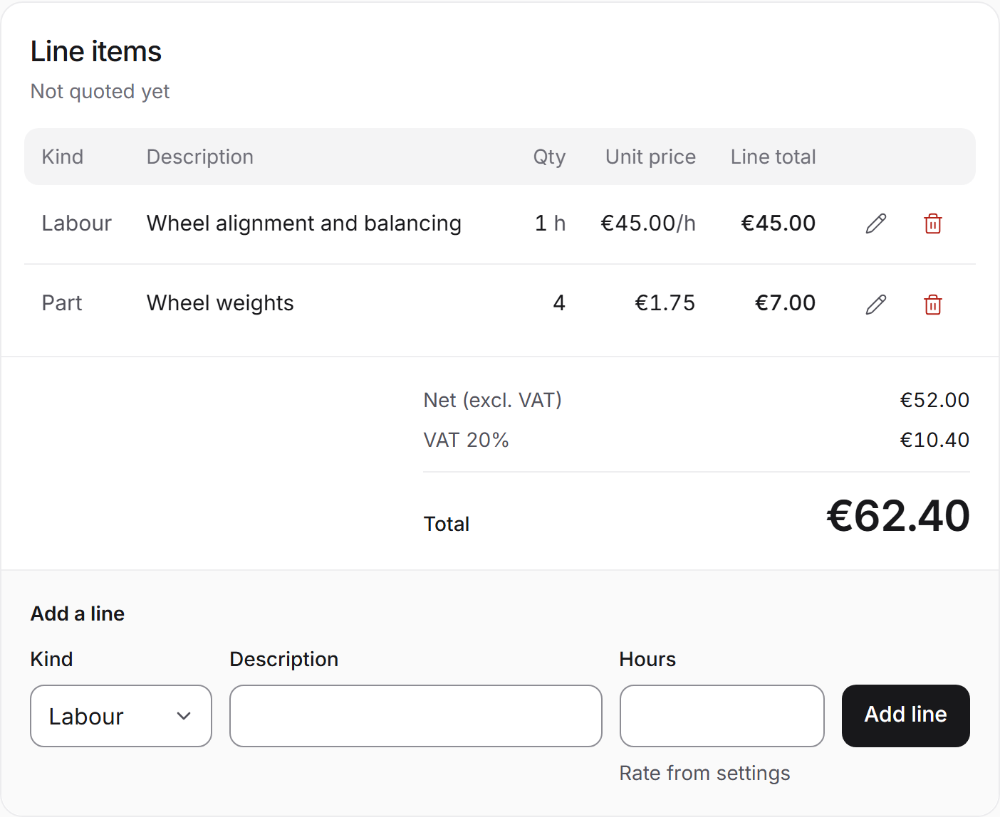
A line amount can show more than two decimals. That is on purpose: nothing is rounded until the total.
Lines can change while the job is New, Quoted, Declined, Approved or In progress. When the job is Ready, Collected or Cancelled the card says Locked while … and the lines cannot change.
Once a quote has been sent, changing a line makes a new version of the quote, and the customer must approve the new total. A yellow note warns you before you do it. See chapter 10.
Chapter 8
The link is a private web address for this one job. The customer opens it on their phone, with no account and no password.
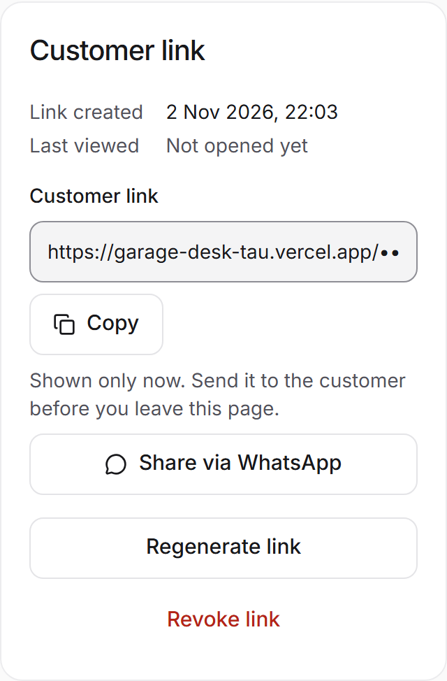
The link is shown only once. Garage Desk does not keep a readable copy, so after you leave the page it cannot show it again. Anyone who has the link can see the quote, so send it only to the customer.
After you leave the page, the card shows Link created and Last viewed. "Last viewed" tells you when the customer last opened it, or says Not opened yet.
One link serves the whole job: the same link shows the quote, any new version of the quote, and the progress until collection. It does not expire.
A link can be made once the job is Quoted, and until it is Ready. The owner and the job's mechanic can make, regenerate and revoke it.
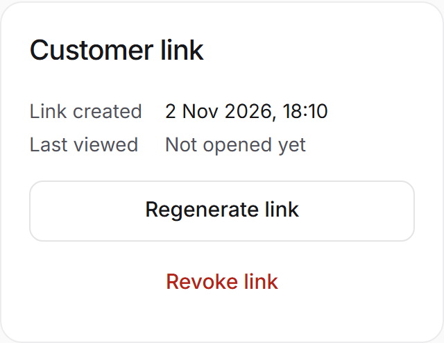
Chapter 9
This is the customer's page on their phone. Knowing it helps you answer their questions.
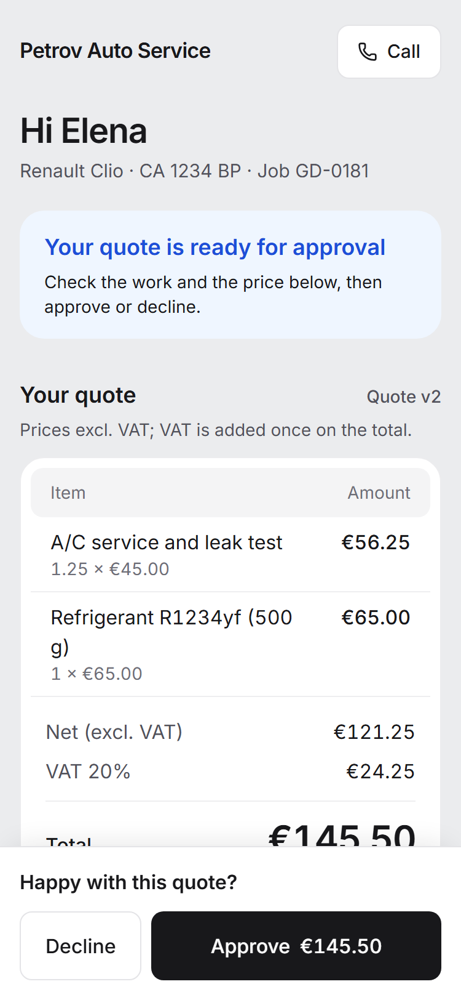
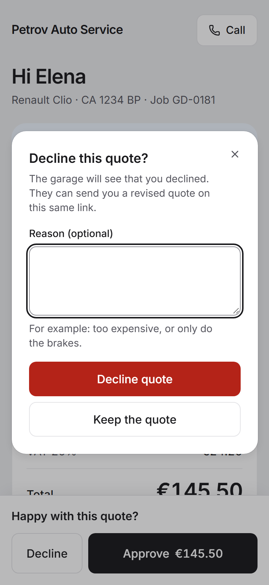
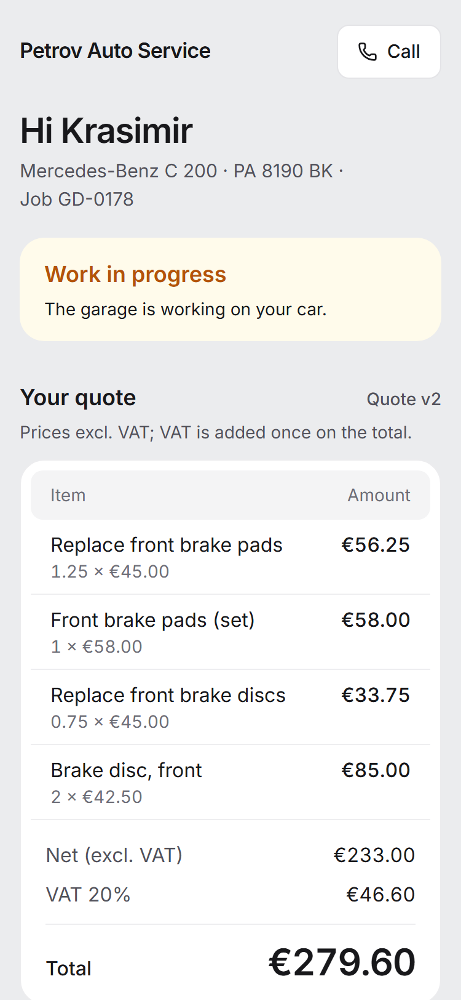
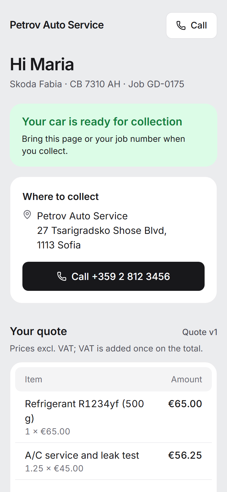
If you changed the quote while their page was open, pressing Approve on the old one changes nothing. Their page shows the new version, and they approve that one.
The message turns green: "Your car is ready for collection". A Where to collect box shows the garage's address and a call button, and the page asks the customer to bring the page or the job number.
Staff names, internal notes, their own phone number, and anything about other jobs or customers.
A mistyped, regenerated or revoked link shows Page not found, with "Got this link from the garage? Ask them to send it again." Regenerate the link and send the new one (chapter 8).
Chapter 10
The job becomes Approved. The timeline says Approved by customer via link, with the version and the total. You can start the work (chapter 11).
The job becomes Declined. Their reason, if they gave one, is on the timeline. The dashboard shows it in red under Awaiting approval.
If the customer does not want the work at all, the owner cancels the job (chapter 11).
Sometimes the mechanic finds more work once the car is open. The customer must agree to the new total before you carry on.
The earlier approval stays on record. Quote history on the job lists every version with its net, VAT and total, and marks the approved one.
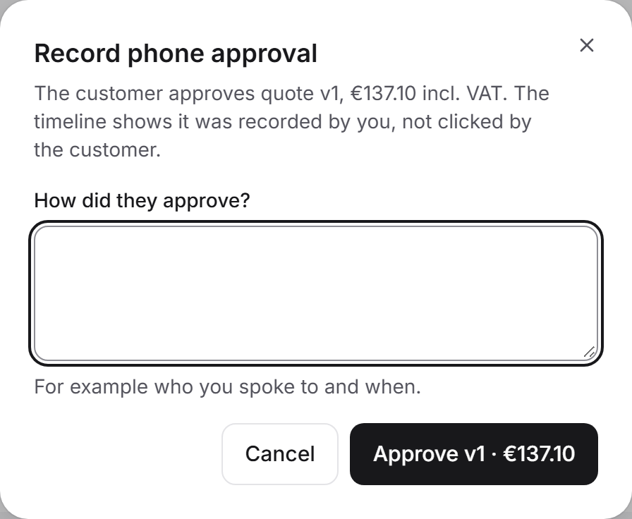
The timeline shows Phone approval recorded by your name, so it is clear the customer did not press the button themselves. Mechanics cannot record phone approvals: they ask the owner.
Chapter 11
The buttons at the top right of the job page always show the next step. Press one to move the job on.
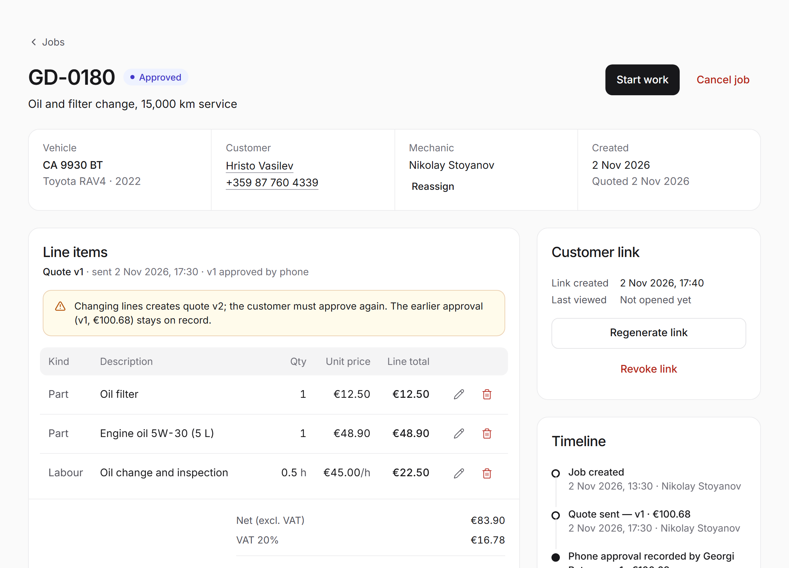
While a job is Ready, press Back to work (rework). Add a note if you like (it shows on the timeline, not to the customer), then confirm. The job goes back to In progress and the customer's link says "Back in the workshop". If the rework costs extra, add lines: the customer approves the new version (chapter 10).
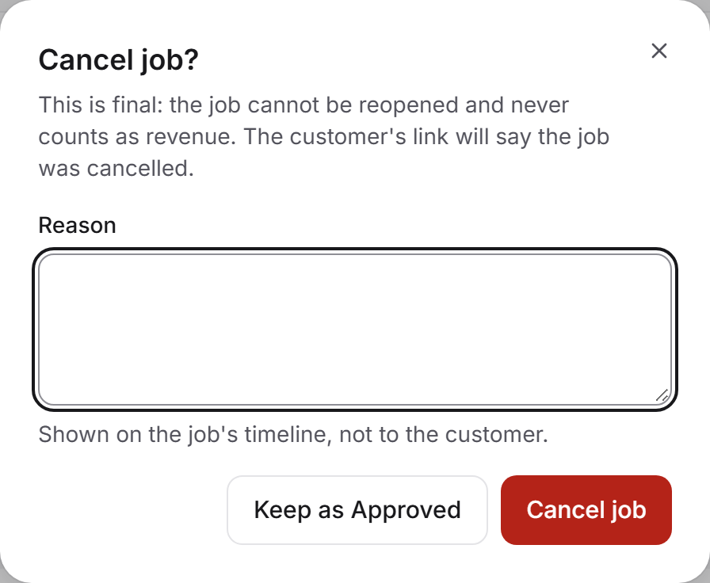
A cancelled job cannot be reopened and never counts as revenue. The customer's link says the job was cancelled. Jobs are never deleted, so the history stays.
Chapter 12
Every job has a Timeline card on the right of the job page. It is the job's record: what happened, when, and who did it.
Each entry shows the date, the time and the staff member's name. Notes you type when you move a job appear under the entry.
If a customer disputes a bill, open the job and read the timeline together with Quote history.
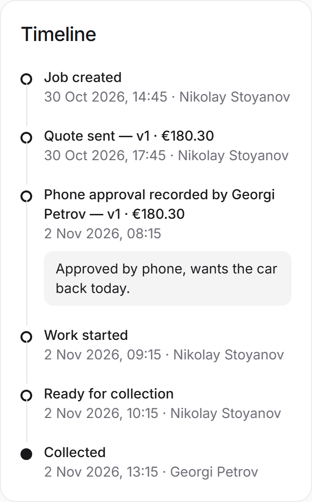
Chapter 13
A mechanic signs in to Jobs, which lists the jobs assigned to them.
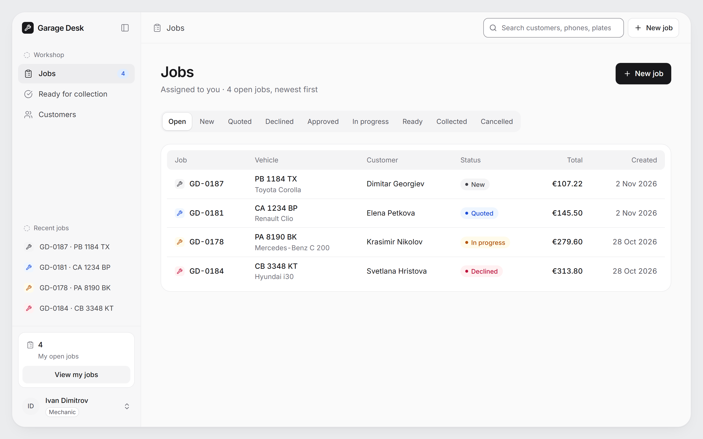
If a mechanic opens a page they cannot use, or another mechanic's job, Garage Desk shows Page not found, the same as for a wrong address.
Empty lists say whose jobs they are, for example No open jobs assigned to you. That means you have nothing open, not that the garage is empty.
The tabs above the list filter by status: Open, then New, Quoted, Declined, Approved, In progress, Ready, Collected and Cancelled.
Chapter 14 · owner
Settings holds the garage's prices and details. Only the owner can open it.
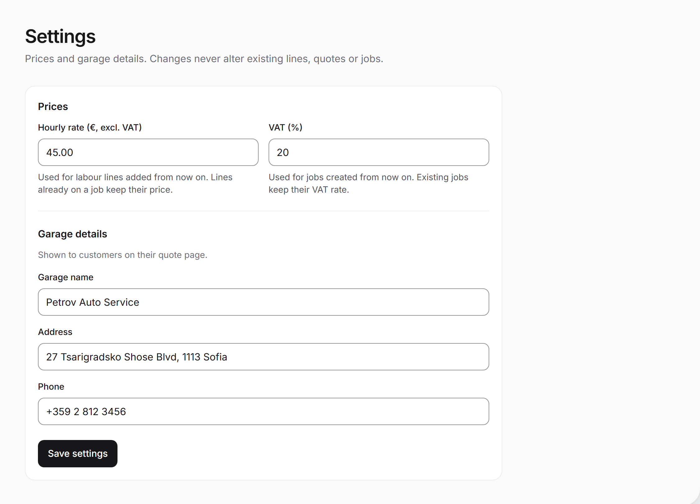
| You change | It applies to | It does not change |
|---|---|---|
| Hourly rate | Labour lines added from now on. | Lines already on a job. They keep their price. |
| VAT (%) | Jobs created from now on. | Existing jobs. They keep their VAT rate. |
| Garage details | Every customer's page, straight away. | Nothing else. |
Changing a setting never alters a quote that was already sent. To give a customer a new price, change the lines on their job: they approve the new version.
Chapter 15 · owner
The Staff page lists everyone who can sign in: photo, name, email, role, status (Active or Inactive) and how many open jobs they have.
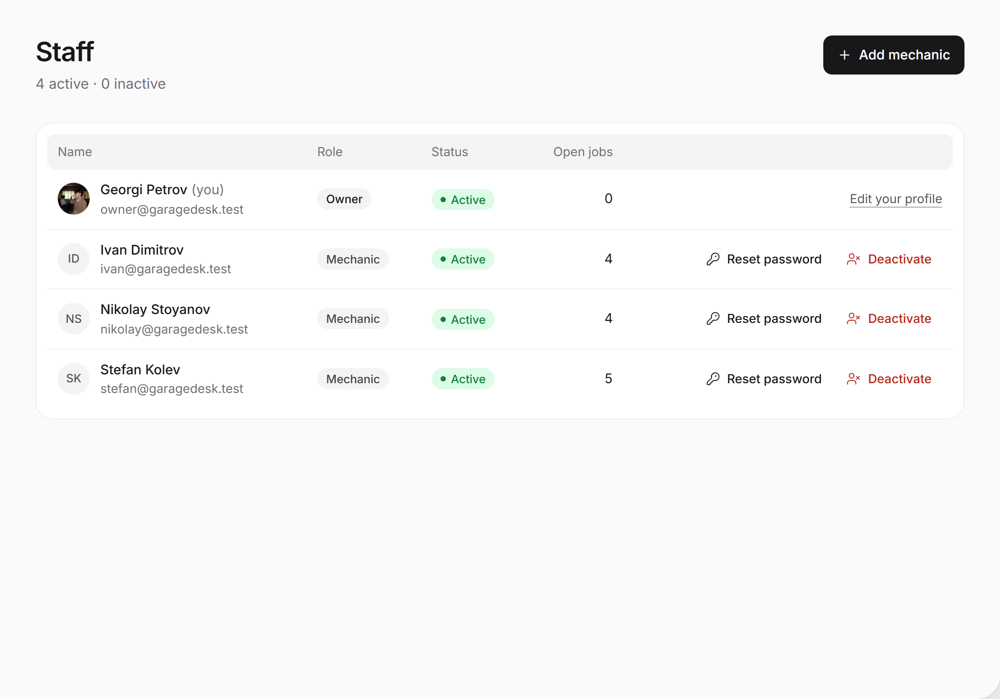
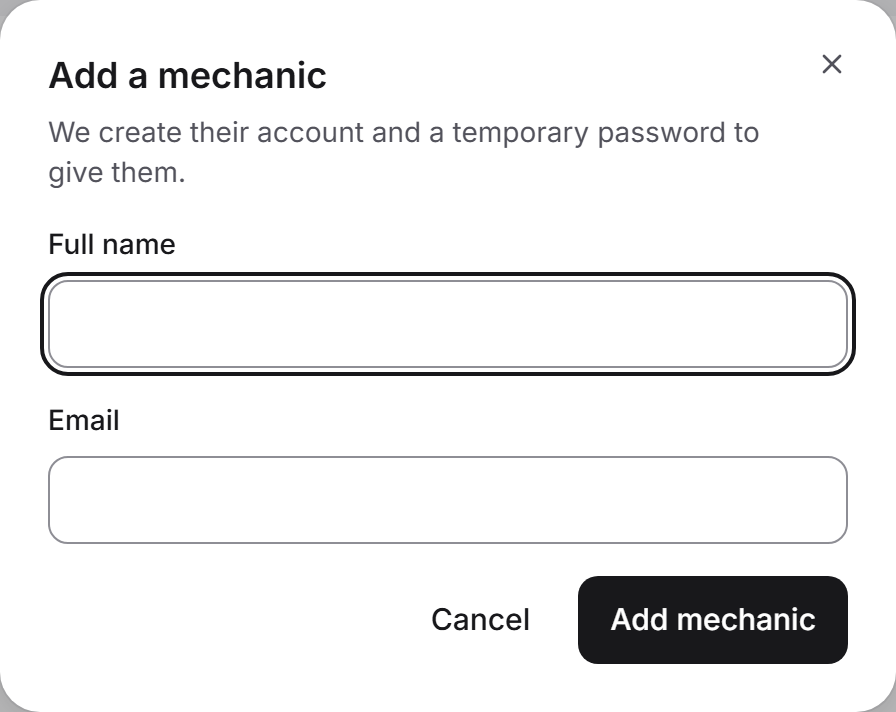
The temporary password is shown only once. When you close the window it is gone. If it is lost, use Reset password to make a new one.
This works only for active mechanics: reactivate a mechanic first. The owner's password is never reset here. You change your own on your profile; if you have forgotten it, contact your Garage Desk administrator.
Press Reactivate on their row and confirm. They can sign in again with their current password.
Nobody can deactivate themselves, and the garage always keeps at least one active owner.
Chapter 16
Everyone has a profile. Open it from the account menu: press your name at the bottom of the left menu, then Profile. On a phone, press your photo or initials at the top right.
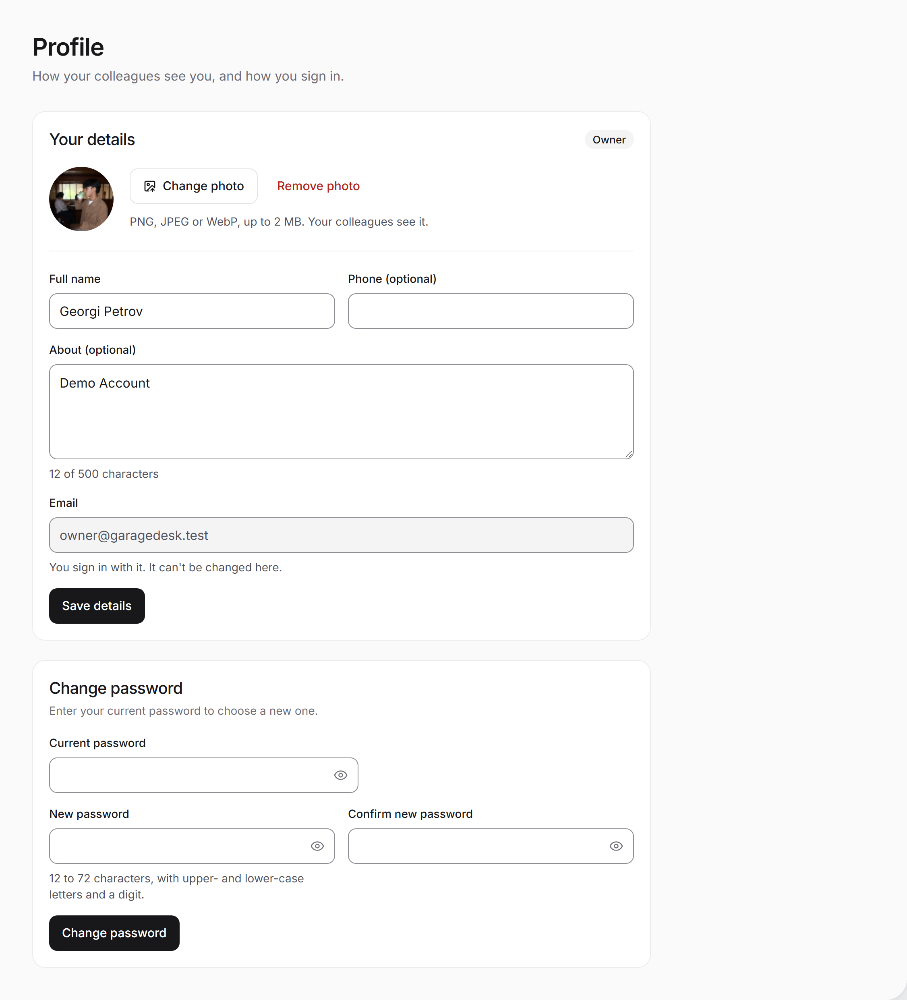
Remove photo goes back to your initials.
Your Email is shown but cannot be changed here. No two staff members can have the same name.
Changing your password signs you out on your other devices.
Colleagues see your name and photo. Nobody else, the owner included, can read your phone number or your "About" text.
Chapter 17
| You see or ask | What to do |
|---|---|
| "Email or password is incorrect." | Check the email and the capital letters. Use the eye icon to see what you typed. Still stuck: a mechanic asks the owner to reset the password; the owner contacts the administrator. |
| "Too many sign-in attempts. Please wait a few minutes and try again." | Wait 5 minutes, then try once, carefully. |
| "Password reset by email isn't set up yet." | Normal for now. Ask the owner to reset your password on the Staff page. |
| Page not found | The address is wrong, the page is for the owner only, or the job belongs to another mechanic. Use the left menu to get back. |
| Something went wrong | The page did not load. Nothing was lost. Press Try again, or Go to jobs. If it keeps happening, check your internet connection. |
| Send quote is grey | Add at least one line first. |
| I cannot change the lines | The job is Ready, Collected or Cancelled ("Locked while …"). For more work on a Ready job, press Back to work (rework) first. |
| I left the page and lost the customer link | Press Regenerate link and send the new one. The old one stops working. |
| The customer says the link does not work | It was mistyped, regenerated or revoked. Regenerate it and send it again. |
| The customer wants to change the work after approving | Change the lines. The job goes back to Quoted as a new version, and they approve the new total. |
| The customer approved by phone | The owner presses Record phone approval and writes who approved and when. |
| Search does not find a plate | Type the plate with Latin letters. Spaces do not matter. |
| Can I delete a job? | No. The owner cancels it with a reason; the history stays. |
| Why is a job missing from this month's revenue? | Revenue counts only jobs marked Collected this month, without VAT. Mark the job collected when the customer takes the car. |
| Does the customer need an account or an app? | No. The link opens in their phone's browser. |
| I lost my phone, or someone saw my password | Change your password on your profile: that signs out your other devices. If you cannot sign in, ask the owner to deactivate your account until it is sorted. |
| A mechanic left the garage | The owner deactivates them on Staff and reassigns their open jobs. |
| I want to change my email | It cannot be changed in the app. Ask your Garage Desk administrator. |
Chapter 18
| Status | Meaning | Next step | The customer's link says |
|---|---|---|---|
| New | Created, quote not sent yet. | Send quote | Your quote is being prepared |
| Quoted | Waiting for the customer's answer. | Customer approves or declines; owner can Record phone approval | Your quote is ready for approval |
| Declined | The customer said no. | Change lines, Send new quote | You declined this quote — the garage may send you a new one |
| Approved | The customer said yes. | Start work | Quote approved — work will start soon |
| In progress | The car is being worked on. | Mark ready for collection | Work in progress |
| Ready | Finished, waiting for the customer. | Mark collected, or Back to work (rework) | Your car is ready for collection |
| Collected | The customer took the car. Final. | Nothing | Collected — thank you! |
| Cancelled | Stopped by the owner. Final. | Nothing | This job was cancelled |
Changing the lines of a Quoted, Approved or In progress job makes a new quote version and puts the job back to Quoted. The owner can cancel any job that is not Collected or Cancelled.
| Task | Owner | Mechanic |
|---|---|---|
| Add and edit customers and cars | Yes | Yes |
| Delete a customer with no jobs | Yes | No |
| Create a job | For any mechanic | Assigned to themselves |
| See jobs | All | Their own |
| Add and change lines, send the quote | Any job | Their own jobs |
| Make, regenerate, revoke the customer link | Any job | Their own jobs |
| Record a phone approval | Yes | No |
| Start work, mark ready, mark collected, rework | Any job | Their own jobs |
| Reassign or cancel a job | Yes | No |
| Dashboard and revenue | Yes | No |
| Settings and Staff | Yes | No |
| Own profile and password | Yes | Yes |